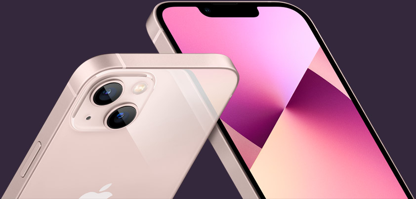
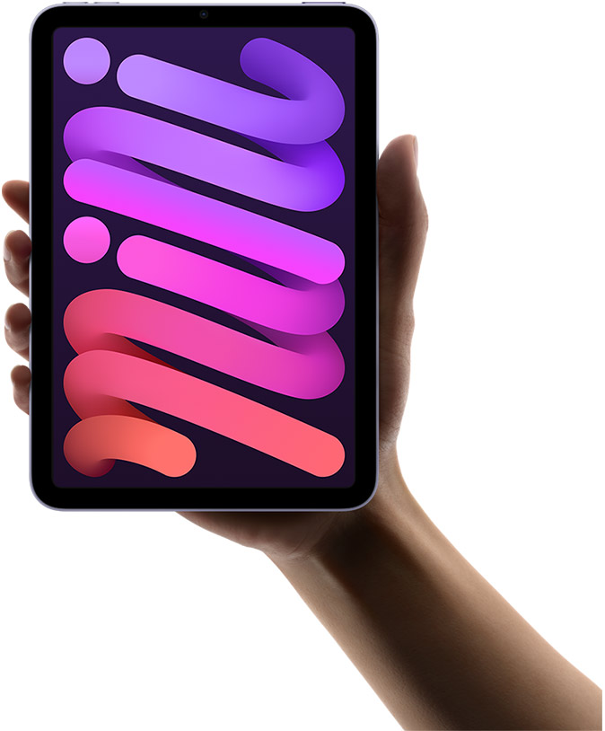

iPhone 13 Pro
Een camerasysteem met drastisch meer power. Een gloednieuw OLED-display met ProMotion. De snelste smartphone-chip ter wereld. Een grote sprong vooruit in batterijduur.

iPhone 13
Ons meest geavanceerde dual camera-systeem ooit. Een nog helderder OLED-display. Een razendsnelle chip die de concurrentie ver achter zich laat. Een grote sprong vooruit in batterijduur.

Het grootste, meest geavanceerde always‑on Retina-display tot nu toe. De meest robuuste Apple Watch ooit. Baanbrekende innovaties voor je gezondheid. Tot wel 33% sneller opladen.
Later dit najaar verkrijgbaar
Meer informatie

Krachtige A15 Bionic-chip. Nieuw all‑screen design. Supersnel 5G. Ultragroothoekcamera aan de voorkant met Middelpunt. Nu in vier prachtige kleuren.

iPad
Geavanceerde A13 Bionic-chip. True Tone-technologie. Ultragroothoekcamera aan de voorkant met Middelpunt. Nu vanaf 64 GB opslag.